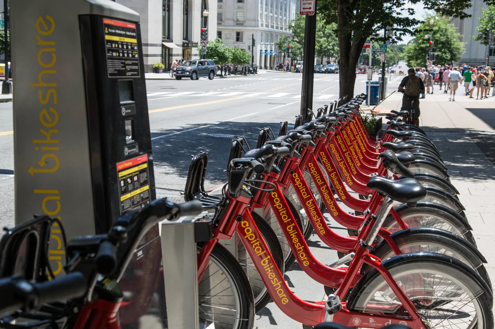

Bike demand forecast.
Explore how weather and working days shape ridership across the Capital Bikeshare network.
Forecast overview
June · Workday · Clear · 24 °C
Hourly ridership
| Local time (ET) | Estimated rides |
|---|
Try a scenario
Model notes
How SpokeCast estimates a day of bike-share trips.
Training and inference
A 31–16–1 dense neural network learns hourly trip counts from hour, month, day type, weather, temperature and study year. Its 529 parameters were fitted in BlyxTorch using Adam over 35 epochs.
The browser runs the same Blyx prediction function, compiled to WebAssembly. The 24 estimates use your selected conditions for every hour at 2012 network scale.
BlyxTorch frameworkHeld-out performance
The model trained on — hours from January 2011 through October 2012. Evaluation uses — later hours from November and December 2012.
- Mean absolute error
- —
- Baseline error¹
- —
- R² score
- —
Data and scope
The UCI Bike Sharing dataset records system-wide Capital Bikeshare rentals in Washington, D.C. in 2011 and 2012. A workday excludes weekends and holidays. The rain/snow category covers light precipitation. Three severe-weather hours were excluded.
The estimates describe historical demand. Present-day ridership, individual stations and exceptional events are outside the model’s scope.
UCI Bike Sharing datasetCredits
Hadi Fanaee-T and João Gama, “Event labeling combining ensemble detectors and background knowledge” (2013). The dataset is available under CC BY 4.0. Research paper · Data license
Capital Bikeshare photograph by Tony Webster, resized and cropped for this display under CC BY-SA 4.0. Original photograph · Photo license